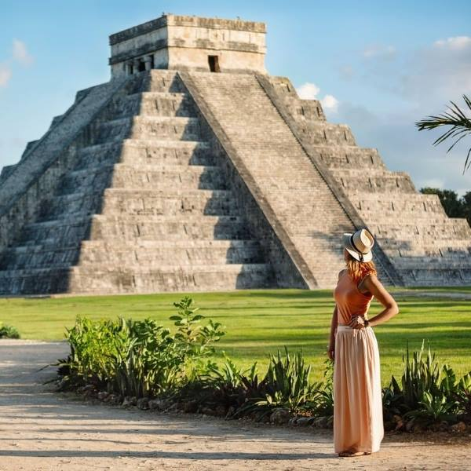

Chichen Itza is an ancient Mayan city located in the Yucat·n Peninsula of Mexico. It was one of the most important Mayan centres during the Classic period (250-900 AD). The city is home to a number of impressive structures, including the El Castillo Pyramid, the Temple of the Warriors, and the Great Ball Court.
